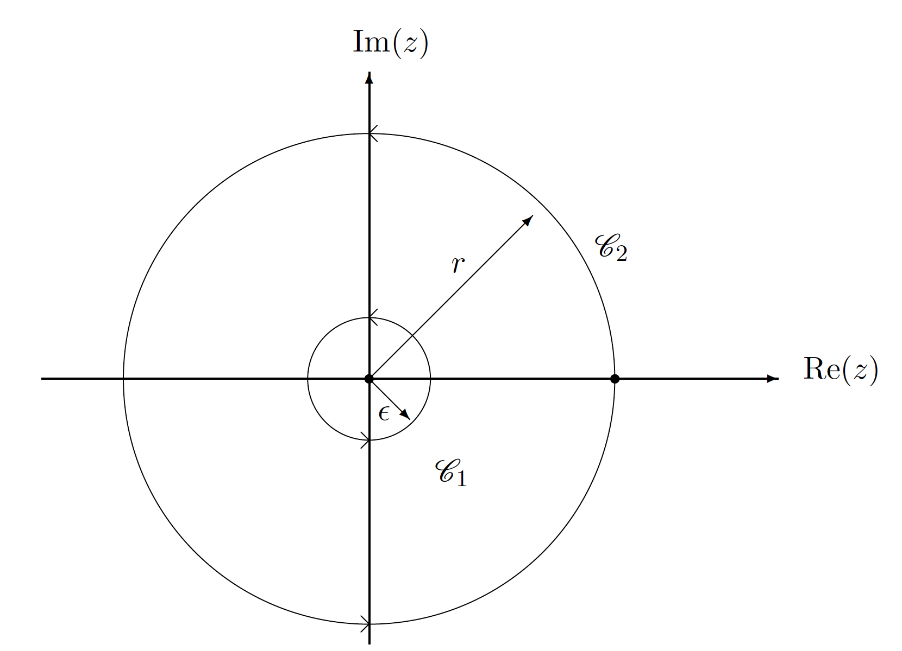
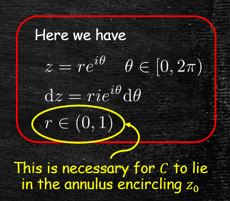
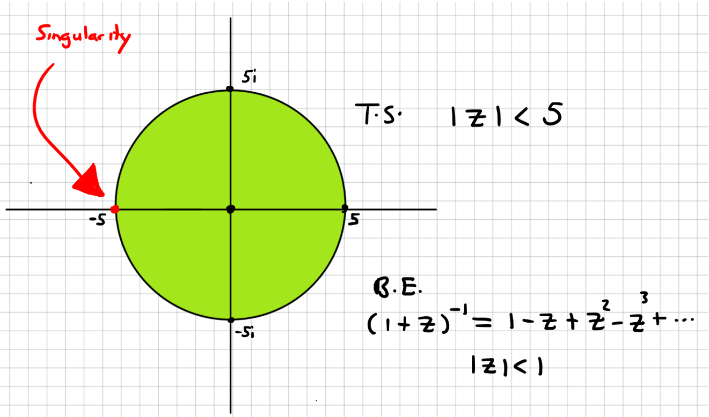
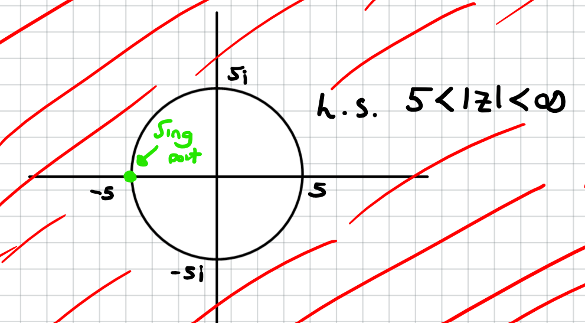
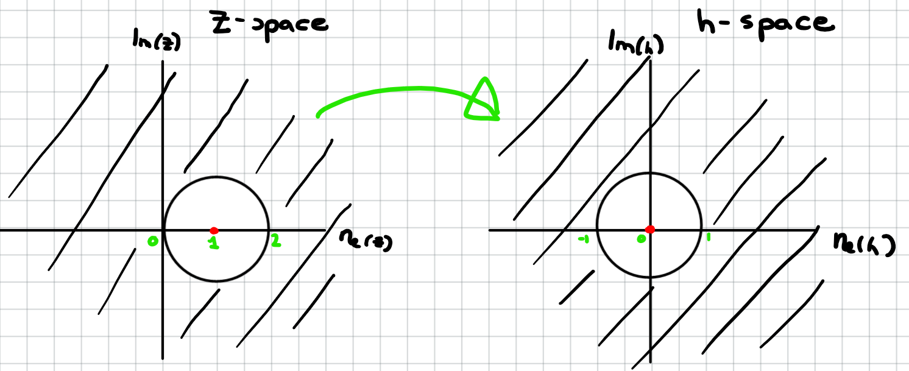

Jonathan Crofts
Nottingham Trent University
Laurent series generalise Taylor series so as to allow us to expand a function in powers of $z-z_0$ even when the function $f(z)$ is singular at $z_0$
Importantly, we can use Laurent series to classify singularities and they are also useful in integration
Hopefully, this sufficiently motivates the following theorem ...
Let $f(z)$ be analytic within the annular region $\displaystyle r_1 < |z-z_0|< r_2$ then $f(z)$ can be represented as a Laurent series
\[ \begin{align*} f(z) &=\sum_{n=0}^\infty a_n(z-z_0)^n+\sum_{n=1}^\infty \frac{b_n}{(z-z_0)^n}\\ &=a_0+a_1(z-z_0)+a_2(z-z_0)^2+\cdots\\ &\cdots + \frac{b_1}{z-z_0}+\frac{b_2}{(z-z_0)^2}+\cdots \end{align*} \]$\bullet ~$ This is like a TS plus some other stuff...
$\bullet ~$ We shall see that this is a generalisation of TS in a way that will become clear later on
The coefficients of the LS
\[ f(z) =\sum_{n=0}^\infty a_n(z-z_0)^n+\sum_{n=1}^\infty \frac{b_n}{(z-z_0)^n} \]can be computed via the integrals
\[ \color{#00FF00}{\boxed{\color{white}{ a_n = \frac{1}{2\pi i}\oint_\mathcal{C}\frac{f(z)}{(z-z_0)^{n+1}}\mathrm{d}z\qquad b_n = \frac{1}{2\pi i}\oint_\mathcal{C}f(z)(z-z_0)^{n-1}\mathrm{d}z}}} \]Here $\mathcal{C}$ is a simple closed path lying in the annulus and encircling $z_0$
Ordinarily we will not use the integrals given above to determine the LS coefficients, instead using known TS, binomial theorem etc.
Calculate the Laurent series of $\displaystyle f(z) = \frac{1}{z(z-1)}$ around $z_0=0$ via direct integration
The function $f$ has singularities at $z=0, 1$ therefore the LS at $z_0=0$ will converge on the annulus given by
\[ 0<|z|<1 \]See the figure
Here
\[ a_n = \frac{1}{2\pi i}\oint_\mathcal{C}\frac{f(z)}{(z-z_0)^{n+1}}\mathrm{d}z \]where $f(z)=1/z(z-1)$ and $z_0=0$
And so
\[ \begin{align*} a_n &= \frac{1}{2\pi i}\oint_\mathcal{C}\frac{1}{z^{n+2}(z-1)}\mathrm{d}z\\ &= \frac{1}{2\pi i}\int_0^{2\pi}\frac{1}{r^{n+2}e^{i(n+2)\theta}}\cdot\frac{1}{re^{i\theta}-1}ire^{i\theta}\mathrm{d}\theta\\ &= -\frac{1}{2\pi r^{n+1}}\int_0^{2\pi}\frac{1}{e^{i(n+1)\theta}}\cdot\frac{1}{1-re^{i\theta}}\mathrm{d}\theta \end{align*} \] $\displaystyle \color{#00FF00}{\boxed{\color{white}{ a_n = -\frac{1}{2\pi r^{n+1}}\int_0^{2\pi}\frac{1}{e^{i(n+1)\theta}}\cdot\frac{1}{1-re^{i\theta}}\mathrm{d}\theta}}} $
Now, since $\displaystyle |re^{i\theta}|<1$ (since $r<1$) we can expand
\[ \left(1-re^{i\theta}\right)^{-1} = \sum_{m=0}^\infty \left(re^{i\theta}\right)^m = \sum_{m=0}^\infty r^me^{im\theta} \]Substituting this into our expression for $a_n$ gives
\[ \begin{align*} a_n &=-\frac{1}{2\pi r^{n+1}}\int_0^{2\pi}e^{-i(n+1)\theta}\sum_{m=0}^\infty r^me^{im\theta}\mathrm{d}\theta\\ &= -\frac{1}{2\pi r^{n+1}}\sum_{m=0}^\infty r^m\int_0^{2\pi} e^{i(m-n-1)\theta}\mathrm{d}\theta \end{align*} \]To obtain the result we note that the integral
\[ \int_0^{2\pi} e^{i(m-n-1)\theta}\mathrm{d}\theta = \begin{cases}2\pi&m-n-1=0\\0&\text{otherwise}\end{cases} \]And so all the terms in the sum are zero except when $m=n+1$ thus
\[ \begin{align*} a_n &=-\frac{1}{2\pi r^{n+1}}\sum_{m=0}^\infty r^m\int_0^{2\pi} e^{i(m-n-1)\theta}\mathrm{d}\theta\\ &= -\frac{1}{2\pi r^{n+1}}r^{n+1}\int_0^{2\pi}\mathrm{d}\theta = \color{#00FF00}{\boxed{\color{white}{-1}}} \end{align*} \]Next for the $b_n$...
We compute the $b_n$ in much the same way
\[ \begin{align*} b_n &= \frac{1}{2\pi i}\oint_\mathcal{C}f(z)(z-z_0)^{n-1}\mathrm{d}z, n=1,2,\ldots\\ &= \frac{1}{2\pi i}\oint_\mathcal{C} \frac{z^{n-1}}{z(z-1)}\mathrm{d}z\\ &= -\frac{1}{2\pi}\int_0^{2\pi} \frac{r^{n-1}e^{i(n-1)\theta}}{1-re^{i\theta}}\mathrm{d}\theta\\ &= -\frac{ r^{n-1}}{2\pi}\sum_{m=0}^\infty r^m\int_0^{2\pi}e^{i(m+n-1)\theta}\mathrm{d}\theta \end{align*} \]Now the last integral is such that
\[ \int_0^{2\pi}e^{i(m+n-1)\theta}\mathrm{d}\theta = \begin{cases}2\pi &m=1-n\\0&\text{otherwise}\end{cases} \]$\implies b_{1}=-1$, otherwise $b_n=0$
Putting this altogether we have that
\[ \begin{align*} f(z) &= \frac{1}{z(z-1)} = \sum_{n=0}^\infty a_n(z-z_0)^n +\sum_{1}^\infty \frac{b_n}{(z-z_0)^n}\\ &= -\frac{1}{z}-\sum_{n=0}^\infty z^n \end{align*} \]since $a_n=-1~ \forall n$ and $b_1=-1$ and $b_n=0, n>1$
The series converges for $0<|z|<1$
Fortunately, in practice we can often compute the Laurent series without resorting to integration
In general, the Laurent series about a (possibly singular) point $z_0$ is
\[ f(z) = \sum_{n=0}^\infty a_n(z-z_0)^n+\sum_{n=1}^\infty \frac{b_n}{(z-z_0)^n} = \sum_{-\infty}^\infty d_n(z-z_0)^n \]From the above series we can deduce the following:
1. If $z_0$ is non-singular or a removable singularity of $f(z)$ then $b_n=0,~\forall n$ (i.e. the LS is a TS)
2. If $z_0$ is an order-$m$ pole of $f(z)$ then its LS takes the form $\displaystyle \sum_{-m}^\infty d_n(z-z_0)^n$ i.e. its LS contains finitely many negative power terms
3. If $z_0$ is an essential singularity of $f(z)$ then its LS has infintiely many negative power terms
Determine the nature of the singularity at $z_0=0$ of the function $\displaystyle f(z)=\frac{e^z}{z^3}$ using its LS
The Taylor series of
\[ e^z = 1+z+\frac{z^2}{2!}+\frac{z^3}{3!}+\frac{z^4}{4!}+\cdots \]And so we can write
\[ \begin{align*} f(z) = \frac{e^z}{z^3} &= \frac{1}{z^3}\left(1+z+\frac{z^2}{2!}+\frac{z^3}{3!}+\frac{z^4}{4!}+\cdots\right)\\ &=\frac{1}{z^3}+\frac{1}{z^2}+\frac{1}{2z}+\frac{1}{6}+\frac{z}{24}+\cdots = \sum_{n=-3}^\infty d_nz^n \end{align*} \]Thus $z_0=0$ is an order 3 pole
Determine the nature of the singularity at $z_0=0$ of the function $\displaystyle f(z)=\frac{\sin(z)}{z}$ using its LS
The Taylor series of
\[ \sin{z} = z-\frac{z^3}{3!}+\frac{z^5}{5!}-\frac{z^7}{7!}+\cdots \]And so we can write
\[ \begin{align*} f(z) = \frac{\sin{z}}{z} &= \frac{1}{z}\left(z-\frac{z^3}{3!}+\frac{z^5}{5!}-\frac{z^7}{7!}+\cdots\right)\\ &=1-\frac{z^2}{3!}+\frac{z^4}{5!}-\cdots = \sum_{n=0}^\infty d_nz^n \end{align*} \]A Taylor series as we have no negative power terms i.e. removable singularity
Determine the nature of the singularity at $z_0=0$ of the function $\displaystyle f(z)=\sin\left(\frac{1}{z}\right)$ using its LS
The Taylor series of
\[ \sin{z} = z-\frac{z^3}{3!}+\frac{z^5}{5!}-\frac{z^7}{7!}+\cdots \] Therefore \[ \begin{align*} f(z)&=\sin\left(\frac{1}{z}\right)\\ &= \frac{1}{z}-\frac{1}{3!z^3}+\frac{1}{5!z^5}-\cdots \end{align*} \]It follows that $z_0=0$ is an essential singularity since its LS has infinitely many negative power terms
Find series expansions of $\displaystyle f(z)=\frac{1}{z+5}$ valid in the regions (a) $|z|<5$ and (b) $5<|z|<\infty $
(a) $|z|<5$
$f=1/(z+5)$ is analytic within the region $|z|<5$ so we're computing a TS.
\[ \begin{align*} f(z)=\frac{1}{z+5}&= \frac{1}{5}\frac{1}{1+z/5}\\ &=\frac{1}{5}\left(1+\frac{z}{5}\right)^{-1} = \frac{1}{5}\left(1-\frac{z}{5}+\frac{z^2}{25}-\frac{z^3}{125}\cdots\right)\\ &=\color{red}{\boxed{\color{white}{\frac{1}{5}-\frac{z}{25}+\frac{z^2}{125}-\frac{z^3}{625}\cdots}}} \end{align*} \]This series is valid for $\displaystyle \left|\frac{z}{5}\right|<1$ or $|z|<5$ as required
(b) $5<|z|<\infty$
Since the series converges in an annular region we are looking for a Laurent series
After some manipulation we can deploy the Binomial expansion as before:
\[ \begin{align*} f(z) = \frac{1}{z+5} = \frac{1}{z}\cdot\frac{1}{1+5/z} &= \frac{1}{z}\left(1+\frac{5}{z}\right)^{-1}\\ &=\frac{1}{z}\left(1-\frac{5}{z}+\frac{25}{z^2}-\frac{125}{z^3}+\cdots\right)\\ &=\color{red}{\boxed{\color{white}{\frac{1}{z}-\frac{5}{z^2}+\frac{25}{z^3}-\frac{125}{z^4}+\cdots}}} \end{align*} \]This series is valid for $\displaystyle \left|\frac{5}{z}\right|<1$ or $5<|z|<\infty$ as required
Find the LS expansion of $\displaystyle f(z)=\frac{1}{z}$ centred at $z_0=1$ valid in the annulus $1<|z-1|<\infty$
We start by making the following change of variables: $h = z-1$, i.e.
\[ f(z) = \frac{1}{z} \to g(h) = \frac{1}{h+1} \]In these new coordinates, we are expanding the function $g(h)$ about the origin as shown in the figure
Again, we can expand using the Binomial expansion
\[ \begin{align*} g(h) &= \frac{1}{h}\left(1+\frac{1}{h}\right)^{-1}\\ &= \frac{1}{h}\left(1-\frac{1}{h}+\frac{1}{h^2}-\frac{1}{h^3}+\cdots\right)\\ &= \frac{1}{h}-\frac{1}{h^2}+\frac{1}{h^3}-\frac{1}{h^4}+\cdots \end{align*} \]This series is valid for $\displaystyle \left|\frac{1}{h}\right|<1$ or $1<|h|<\infty$
Transforming back to the original $z$ variable:
\[ \color{red}{\boxed{\color{white}{ f(z) = \frac{1}{z-1}-\frac{1}{(z-1)^2}+\frac{1}{(z-1)^3}-\frac{1}{(z-1)^4}+\cdots}}} \]This series is valid for $1<|z-1|<\infty$ as required